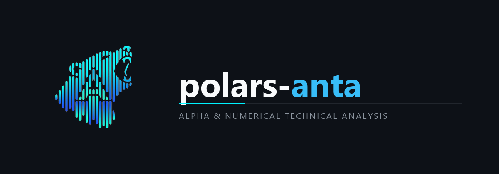

Overview

What is polars-anta?¶
polars-anta (Alpha & Numerical Technical Analysis) is an open-source quantitative finance library for technical analysis, market microstructure estimation, cross-sectional factor engineering, and vectorized backtesting in Python and Polars.
Designed for quantitative researchers, algorithmic traders, data scientists, and students, polars-anta implements technical indicators, statistical regressions, formulaic alpha primitives, and portfolio evaluation tools directly as Polars Expressions (pl.Expr)—combining readable, inspectable mathematical formulas with Polars' multi-threaded Rust execution engine.
A Simple Core Idea:
Quantitative Pipeline = OHLCV Data + Native Polars Expressions (
.anta/.ta) + Cross-Sectional Alpha + Vectorized Backtest
Why polars-anta?¶
- End-to-end quantitative coverage — move seamlessly from raw OHLCV validation and technical indicators to cross-sectional factor neutralization, IC/quantile evaluation, and vectorized backtesting.
- Transparent implementations — inspect clean, closed-form algebraic Polars expressions rather than opaque C/Cython binaries.
- Rust-accelerated performance — up to 112.4x faster than Pandas on 1,000,000 rows via multi-threaded Rust query execution and zero-copy stride tricks.
- Zero C compilation — installs in seconds via
pip install polars-antaacross Windows, macOS, and Linux with no external C headers or MSVC/GCC toolchains. - Learn by example — explore ready-to-run Python scripts, 1-click Google Colab notebooks, and modular API reference guides.
Documentation and Learning Resources¶
| Resource | Description |
|---|---|
| API Reference & Catalog | Complete module-by-module function signatures, struct fields, and mathematical formulas |
| Getting Started Guide | Installation, expression syntax, pl.Struct unnesting, and fluent DataFrame chaining |
| Architecture & Vectorization | How closed-form OLS identities, Wilder recurrences, and zero-copy stride windows work |
| Multi-Asset Universe Guide | Scaling indicators and cross-sectional factors across hundreds of symbols with .over("ticker") |
| Resampling & Data Validation | Multi-timeframe OHLCV aggregation (resample_ohlcv) and integrity checks (validate_ohlcv) |
| Factor Evaluation & Backtesting | Rank IC, ICIR, quantile monotonicity, strategy tearsheets, and df.anta.backtest() |
| Performance Benchmarks | 1,000,000-row latency comparisons against Pandas and reproduction instructions |
| Interactive Colab Notebooks | Runnable Jupyter / Google Colab tutorials covering screening, momentum, and backtesting |
3-Step Quick Start¶
1. Install¶
2. Compute Indicators & Alpha Factors¶
import polars as pl
import polars_anta as pa # Registers .anta and .ta namespaces
df = pl.read_parquet("market_data.parquet")
features = df.with_columns(
pl.col("close").anta.ema(20).over("symbol").alias("ema_20"),
pl.col("close").anta.rsi(14).over("symbol").alias("rsi_14"),
pl.col("close").anta.linear_regression_slope(14).over("symbol").alias("ols_slope"),
pl.col("close").anta.bollinger_bands(20, 2.0).over("symbol").alias("bb"),
).unnest("bb")